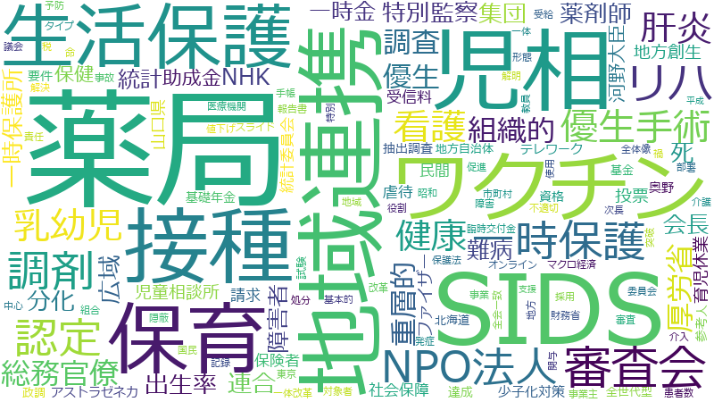

桝屋敬悟

薬局、接種、ワクチン、調査、認定、保育、健康、児相、地域連携、審査会、生活保護、厚労省、民間、NPO法人、SIDS、会長、統計、一時保護、広域、看護、要件、障害者、乳幼児、助成金、地方創生、委員会、組織的、連合、達成、集団、NHK、保健、参考人、地方自治体、死、社会保障、調剤、請求、北海道、市町村、役割、採用、河野大臣、試験、資格、重層的、オンライン、テレワーク、リハ、一体、一時金、促進、優生手術、児童相談所、出生率、基金、審査、投票、改革、特別監察、肝炎、薬剤師、虐待、一時保護所、保険者、優生、処分、国民、報告書、対象者、少子化対策、昭和、育児休業、議会、財務省、責任、難病、タイプ、ファイザー、予防、事業、介護、使用、全世代型、分化、医療機関、受信料、地域、基本的、山口県、次長、特別、発症、組合、統計委員会、総務官僚、臨時交付金、解明、記録、関与
薬局、SIDS、地域連携、児相、接種、保育、ワクチン、生活保護、審査会、調剤、一時保護、リハ、認定、NPO法人、優生手術、看護、乳幼児、健康、肝炎、総務官僚、組織的、厚労省、重層的、調査、優生、特別監察、連合、広域、薬剤師、死、分化、一時保護所、出生率、集団、障害者、難病、会長、NHK、一時金、統計、助成金、河野大臣、保健、児童相談所、地方創生、育児休業、ファイザー、投票、山口県、社会保障、保険者、虐待、請求、民間、統計委員会、受信料、少子化対策、アストラゼネカ、テレワーク、要件、基礎年金、参考人、抽出調査、資格、奥野、達成、地方自治体、北海道、基金、全世代型、政調、試験、マクロ経済、値下げ、タイプ、突破、一体改革、患者数、次長、手帳、オンライン、発症、スライド、臨時交付金、採用、対象者、議会、解明、財務省、市町村、委員会、隠蔽、全体像、全会一致、組合、昭和、一体、処分、受給、改革